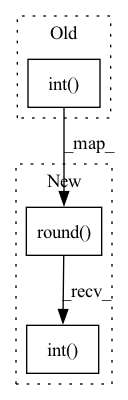

Pattern ID :17124
Before Change
dict_int2lab,
task="encode",
)
lens = (encoded_seq_pieces * encoded_seq_ids.shape[1]).int()
// decode from torch tensors (batch, batch_lens)
words_seq = spm(encoded_seq_ids, encoded_seq_pieces, task="decode")
assert words_seq == gt, "output not the same"
// decode from a list of bpe sequence (without padding)After Change
dict_int2lab,
task="encode",
)
lens = (encoded_seq_pieces * encoded_seq_ids.shape[1]).round().int()
// decode from torch tensors (batch, batch_lens)
words_seq = spm(encoded_seq_ids, encoded_seq_pieces, task="decode")
assert words_seq == gt, "output not the same"
// decode from a list of bpe sequence (without padding)In pattern: SUPERPATTERN
Frequency: 4
Non-data size: 3
Instances Fragment ID: 57270377
Project Name: speechbrain/speechbrain
Commit Name: eb41f8ce9986b698c1c43108127165044455c4e2
Time: 2021-11-19
Author: mirco.ravanelli@gmail.com
File Name: tests/unittests/test_tokenizer.py
M Class Name: AnonimousClass
N Class Name: AnonimousClass
M Method Name: test_tokenizer(0)
N Method Name: test_tokenizer(0)
M Parent Class:
N Parent Class:
M File Name: tests/unittests/test_tokenizer.py
N File Name: tests/unittests/test_tokenizer.py
M Start Line: 31
M End Line: 134
N Start Line: 31
N End Line: 134
Before Change
See pytorch for "mean", "sum", "none". The "batch" option returns
one loss per item in the batch, "batchmean" returns sum / batch size.
input_lens = (input_lens * log_probs.shape[1]).int()
target_lens = (target_lens * targets.shape[1]).int()
log_probs = log_probs.transpose(0, 1)
if reduction == "batchmean":After Change
See pytorch for "mean", "sum", "none". The "batch" option returns
one loss per item in the batch, "batchmean" returns sum / batch size.
input_lens = (input_lens * log_probs.shape[1]).round().int()
target_lens = (target_lens * targets.shape[1]).round().int()
log_probs = log_probs.transpose(0, 1)
if reduction == "batchmean": Fragment ID: 57270376
Project Name: speechbrain/speechbrain
Commit Name: eb41f8ce9986b698c1c43108127165044455c4e2
Time: 2021-11-19
Author: mirco.ravanelli@gmail.com
File Name: speechbrain/nnet/losses.py
M Class Name: AnonimousClass
N Class Name: AnonimousClass
M Method Name: ctc_loss(6)
N Method Name: ctc_loss(6)
M Parent Class:
N Parent Class:
M File Name: speechbrain/nnet/losses.py
N File Name: speechbrain/nnet/losses.py
M Start Line: 236
M End Line: 237
N Start Line: 236
N End Line: 237
Before Change
// Getting current predictions
current_pred = predictions[j]
actual_size = (input_lens[j] * log_probs.shape[1]).int()
current_pred = current_pred[0:actual_size]
current_pred = filter_ctc_output(
list(current_pred.cpu().numpy()), blank_id=blank_index
)After Change
// Getting current predictions
current_pred = predictions[j]
actual_size = (input_lens[j] * log_probs.shape[1]).round().int()
current_pred = current_pred[0:actual_size]
current_pred = filter_ctc_output(
list(current_pred.cpu().numpy()), blank_id=blank_index
) Fragment ID: 57270379
Project Name: speechbrain/speechbrain
Commit Name: eb41f8ce9986b698c1c43108127165044455c4e2
Time: 2021-11-19
Author: mirco.ravanelli@gmail.com
File Name: speechbrain/nnet/losses.py
M Class Name: AnonimousClass
N Class Name: AnonimousClass
M Method Name: ctc_loss_kd(5)
N Method Name: ctc_loss_kd(5)
M Parent Class:
N Parent Class:
M File Name: speechbrain/nnet/losses.py
N File Name: speechbrain/nnet/losses.py
M Start Line: 998
M End Line: 1020
N Start Line: 998
N End Line: 1020
Before Change
from speechbrain.nnet.loss.transducer_loss import Transducer
input_lens = (input_lens * log_probs.shape[1]).int()
target_lens = (target_lens * targets.shape[1]).int()
return Transducer.apply(
log_probs, targets, input_lens, target_lens, blank_index, reduction
)
After Change
from speechbrain.nnet.loss.transducer_loss import Transducer
input_lens = (input_lens * log_probs.shape[1]).round().int()
target_lens = (target_lens * targets.shape[1]).round().int()
return Transducer.apply(
log_probs, targets, input_lens, target_lens, blank_index, reduction
)
Fragment ID: 57270378
Project Name: speechbrain/speechbrain
Commit Name: eb41f8ce9986b698c1c43108127165044455c4e2
Time: 2021-11-19
Author: mirco.ravanelli@gmail.com
File Name: speechbrain/nnet/losses.py
M Class Name: AnonimousClass
N Class Name: AnonimousClass
M Method Name: transducer_loss(6)
N Method Name: transducer_loss(6)
M Parent Class:
N Parent Class:
M File Name: speechbrain/nnet/losses.py
N File Name: speechbrain/nnet/losses.py
M Start Line: 49
M End Line: 50
N Start Line: 49
N End Line: 50